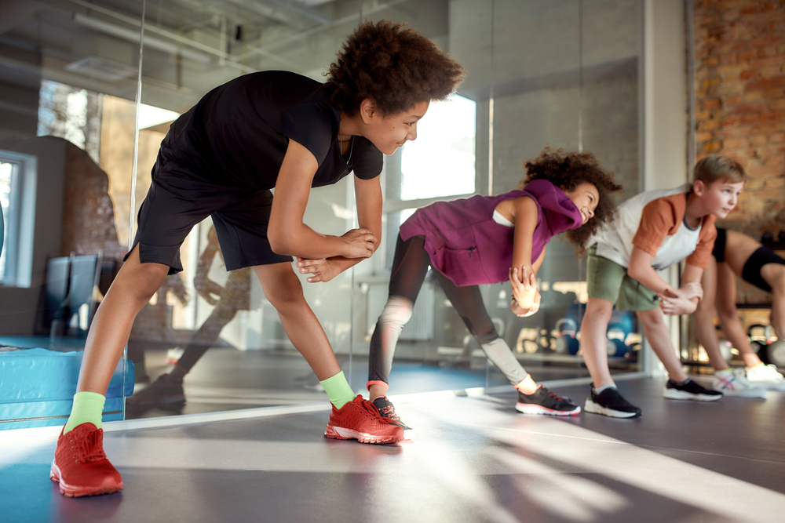

Exercise
Discover enjoyable ways to incorporate movement into your daily routine despite the sedentary pull of technology.

Finding activities you enjoy makes staying active easier
Movement in the Digital Age
Teens should get at least 60 minutes of moderate to vigorous physical activity every day, yet many struggle to meet this recommendation in today's screen-centered world.
Why Movement Matters
Regular physical activity strengthens your heart, lungs, and muscles; improves your mood; boosts your energy; and is linked to better academic performance.
Finding Your Active Zone
Team Activities
- Basketball
- Soccer
- Volleyball
Individual Activities
- Swimming
- Cycling
- Dance
Making Exercise Social and Fun
Try these strategies to make movement more enjoyable:
- Exercise with friends or family
- Listen to music, podcasts, or audiobooks while moving
- Try fitness apps with gamification features
- Schedule short activity breaks between study sessions